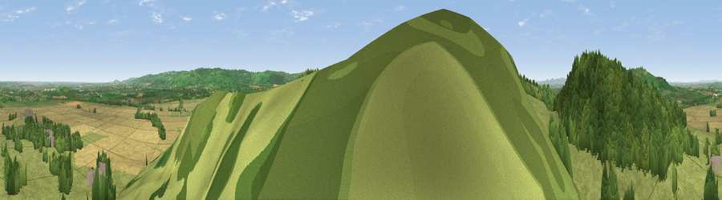

Viewpoint near Dumbleton
#7711 in England · top 19% of its area beats it · near Dumbleton · path 240 mWhere it is
The exact computed spot (SP 01362 35125). Click the marker for map links.
Public access: the nearest public right of way is about 240 m away — the final stretch may cross private land. Computed from Natural England's CRoW access layer and OpenStreetMap rights of way — not the legal definitive map. Always verify locally.
The view, rendered

A 360° render of this exact spot computed from the terrain model, tree cover and land cover — summer colours, afternoon light, calibrated against photographs of famous viewpoints. Real trees, hedges and buildings will differ in detail.
The panorama
Grey silhouette: terrain skyline in each direction (720 bearings, Earth curvature and refraction included). Dashed green: skyline with trees (+15 m) and buildings (+8 m) as obstacles. Blue strip: how far the ground is visible on each bearing.
Where the view opens
Wedge length = distance to the farthest visible ground on that bearing (vegetation-aware). Rings at 10, 25 and 50 km.
What fills the view
43% grassland · 39% woodland · 17% cropland ·
Angular shares of the visible panorama (visual magnitude), not map area. Landscape diversity 0.46 (0–1 Shannon).
Key numbers
More beautiful places nearby
The staircase of upgrades: each row has a higher view potential than everything closer. Driving times are estimates from straight-line distance, calibrated against real road routing — check an actual route before setting out.
| Place | Direction | Drive | Score |
|---|---|---|---|
| Viewpoint near Alderton | SW · 1 km | ~2 min | 76.5 |
| Viewpoint near Alstone | SW · 5 km | ~12 min | 79.8 |
| Viewpoint near Elmley Castle | NW · 6 km | ~12 min | 80.5 |
| Nottingham Hill | SSW · 8 km | ~15 min | 80.9 |
| Bredon Hill | NW · 8 km | ~15 min | 83.0 |
| Black Hill | WNW · 25 km | ~41 min | 83.1 |
| Pinnacle Hill | WNW · 25 km | ~41 min | 85.7 |
| Millennium Hill | W · 26 km | ~41 min | 86.9 |
52.01455, -1.98156 · source: screening · position refined by local search. Computed location — check access rights before visiting.